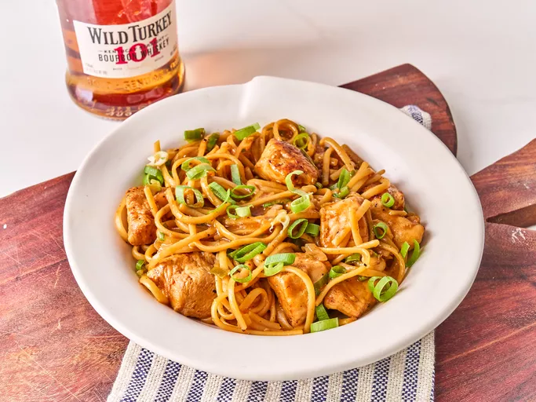

Home
Chicken and Noodles

Description
This fresh made chicken and noodles is something that every noodle lover should try out!
Ingredients
- Chicken
- Noodles
- Soy sauce
Steps
- Season chicken with garlic powder, paprika, salt and pepper and toss well to coat. Whisk together stock, bourbon, soy sauce, ketchup and ginger and set aside.
- Heat 1 tablespoon oil in a large deep skillet over medium-high heat. Add chicken and cook, stirring occasionally, until browned on all sides (chicken will not be cooked through at this point). Remove chicken from skillet and set aside.
- Add butter to skillet and melt over medium-high heat. Add the white parts of the green onions and garlic and cook, stirring constantly, 1 minute. Add crushed red pepper and pasta and stir to coat in butter mixture. Pour in reserved bourbon mixture and stir until everything is well incorporated, scraping any browned bits from the bottom of the skillet. Bring mixture to a boil and reduce to simmer, stirring often to keep the noodles from sticking.
- Enjoy your fresh chicken and noodles!